superDash v4 — ok
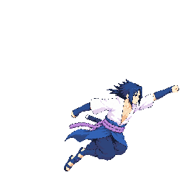
f0 hair 1.047
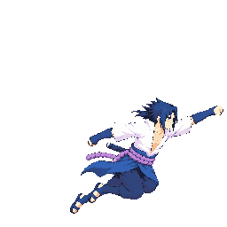
f1 hair 1.044
Full source

New versions need review. Diagnostic cells use current anatomical sidecars; the production strict pack remains blocked. Existing approved atlas is unchanged. Neither numeric pass nor this gallery is art approval.
Every-frame hair probe | Cast lineup with candidate charge | Exact measurements | All corrected frames
f0 hair 1.003
f1 hair 1.011
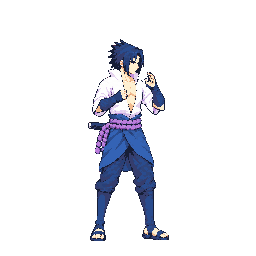
f2 hair 1
f3 hair 1.004
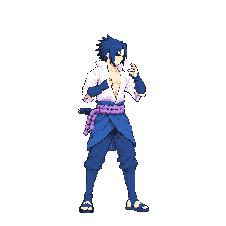
f4 hair 1
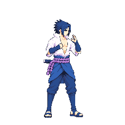
f5 hair 0.992
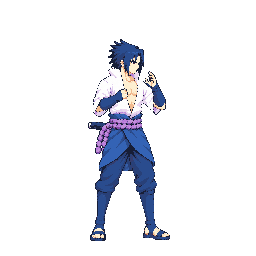
f6 hair 1
f7 hair 1
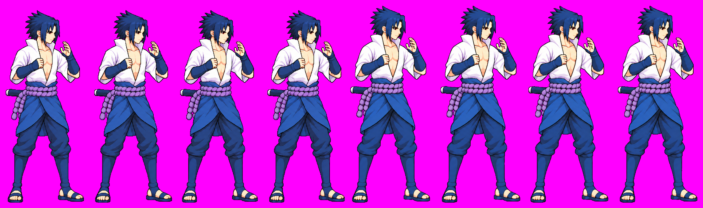
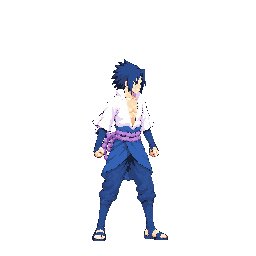
f0 hair 0.962
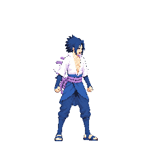
f1 hair 0.957
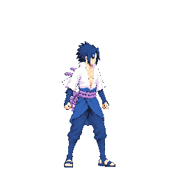
f2 hair 0.943
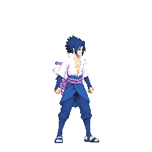
f3 hair 0.936
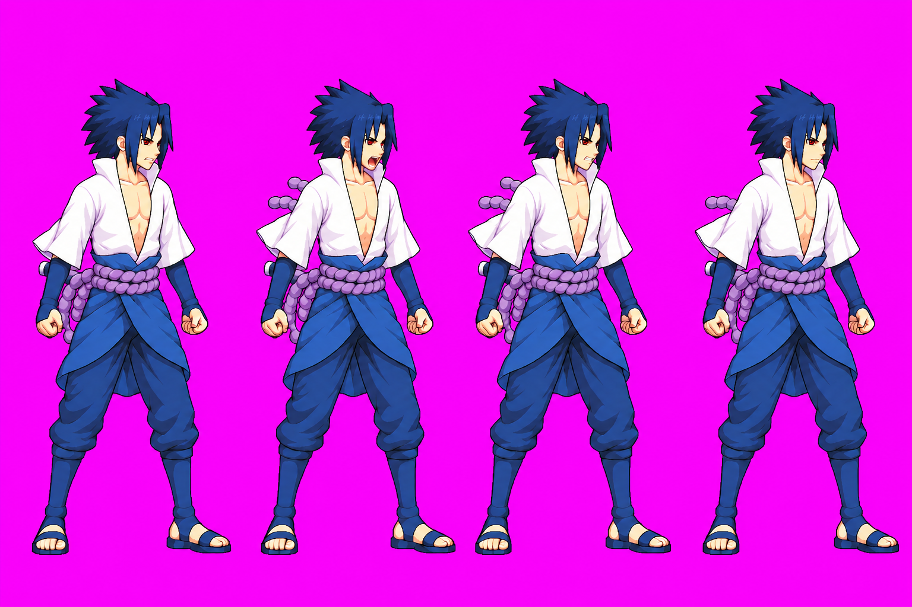
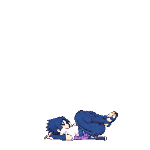
f0 hair 1.626
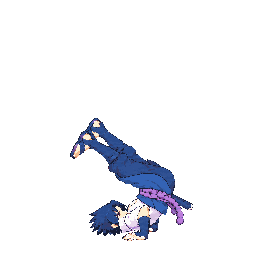
f1 hair 2.588
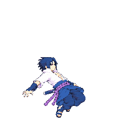
f2 hair 0.924
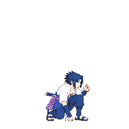
f3 hair 0.941
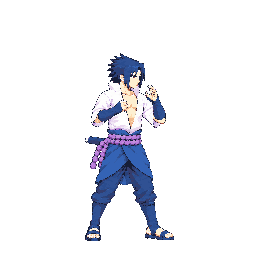
f4 hair 0.955
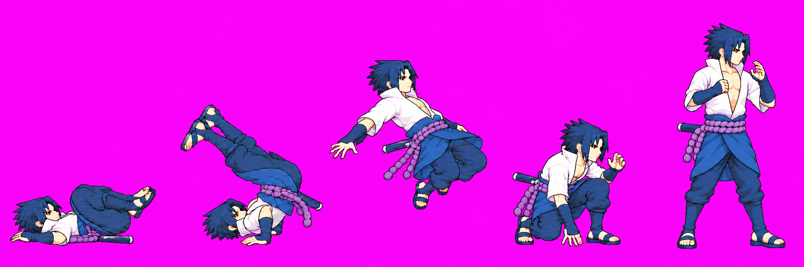
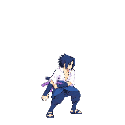
f0 hair 0.943
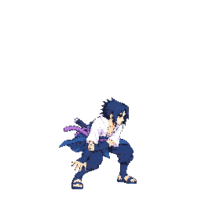
f1 hair 1
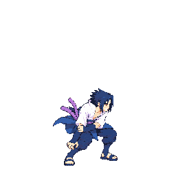
f2 hair 0.971
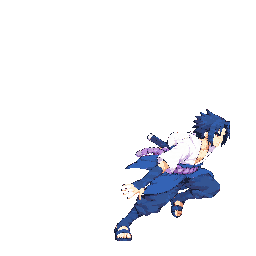
f3 hair 1
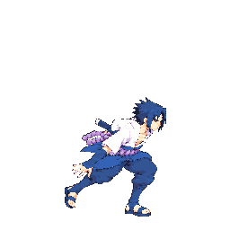
f4 hair 1
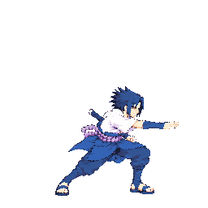
f5 hair 1.029
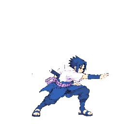
f6 hair 1
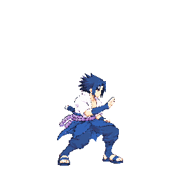
f7 hair 0.941
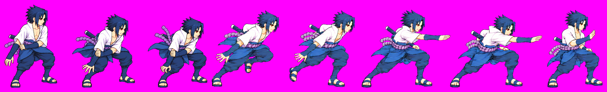
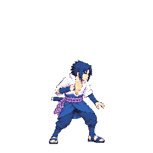
f0 hair 1
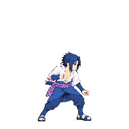
f1 hair 1.003
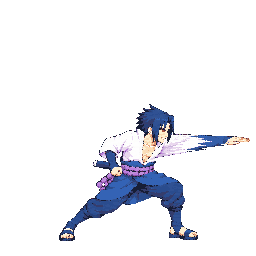
f2 hair 1.057
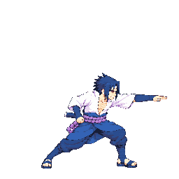
f3 hair 1.057
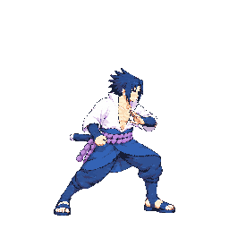
f4 hair 1.086
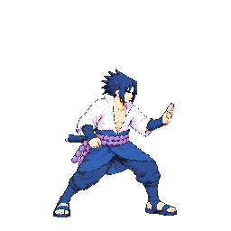
f5 hair 0.941
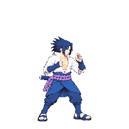
f6 hair 0.937
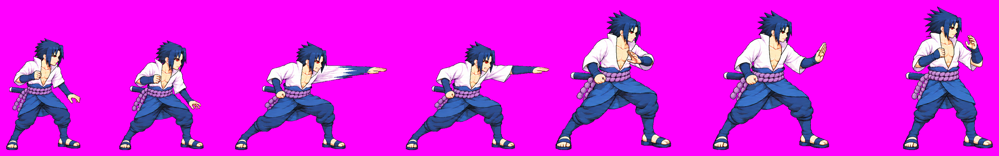

f0 hair 1.047

f1 hair 1.044